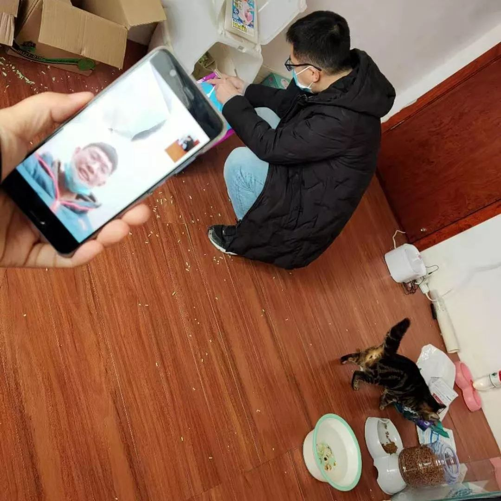
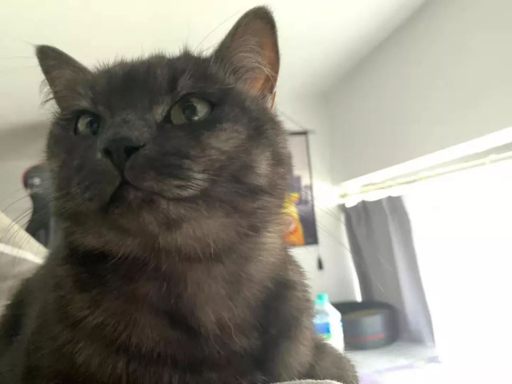

武汉留守宠物救助：“我收到了人生中最密集的好意”
原文链接 备份链接 城里的人出不去，城外的人进不来，留汉的宠物面临被饿死的境况。 文 | 许建宝、赵琼、周晓雨、王超 编辑 | 沈小山 武汉封城之后，除了留守的人们，还有数不清的无人照管的宠物。有些饲主早已料到不能及时回来便放生了，让宠 …
“不管求助的家庭有多少，都不能让动物绝望地死在自己熟悉的环境里。”
记者 | 陈璐
实习记者 | 赵怡宁
特殊时期的上门援助
1月25日武汉封城的第三天，武汉市小动物保护协会（简称武小协）的会长杜帆在协会群里询问，现在有很多因为主人回不来，留守在武汉的宠物，武小协能不能去做上门喂养，以免留守动物渴死、饿死。这很快遭到了大家的反对。毕竟没人知道到底有多少小动物在等待救援，外面的疫情究竟有多严重。而且，上门喂养会不会增加感染风险，开锁入户会不会引起法律纠纷？
到了第二天，杜帆突然在群里开会，说他收到了差不多50个家庭的求助，“这个事情必须要做了”。“我当时觉得他想得太理想了，不可能只有50家。”武小协的干部小张向本刊回忆道。虽然小张在群里委婉指出，数量可能需要在50的基础上乘以10，但杜帆还是果断要求所有成员迅速准备微信推文，安排工作。
当天下午4点多，武小协的官方微信推送了一条消息《猫狗留在武汉的主人们，可以联系我们》，愿意无偿为武汉宠物主上门救助宠物。微信推文中还按区域划分附上了汉口、汉阳和武昌三镇的微信群二维码，结果不到一个小时，三个微信群共计600人，立刻就加满了。
截至到2月5日，3个微信群、2个QQ群和一份援助登记表，向他们求助的加起来差不多有快5000人。留守的动物中，最多的是猫和狗，尤其猫了占大多数，其他还有比如仓鼠、龙猫、鹦鹉、乌龟、金鱼和小香猪。

武小协制作的相关求助名单。发出推送后不久，即收到2800多条求助信息。
“从后来两天的帮扶情况来看，如果我们不去，很多人家里的动物肯定会饿死、渴死。我们很能理解杜帆的心情。不管求助的家庭有多少，都不能让动物绝望地死在自己熟悉的环境里。”小张感慨地告诉本刊。
实际上，武小协也确实碰到过这样的悲惨情况。有次他们接到一个紧急任务，委托人是湖北周边地区的人，因为原本只是计划回去三天，就把怀孕的母猫留在了武汉家中，结果现在回不来了，母猫却马上要生产，他十分担心，便委托武小协上门看看情况。等到杜帆和武小协的义工小伟赶过去，发现母猫已经分娩，有两只小奶猫死掉了。任其发展下去，无疑会对现有的疫情雪上加霜。最后，他们清理了现场，为母猫补充了食物和水，并将两只死亡的奶猫送去火化。
“不过据我了解，这次的大部分求助家庭，只要为宠物准备充足的水和粮食，维持一到两周不会有什么问题。”武小协负责大学生志愿者工作的黄晓跃向本刊介绍，宠物长期自己待在家里，可能比较多见的是出现眼垢和尿道的问题，他们在上门时也会携带一些常见的滴耳朵、滴眼睛和喷剂等基本药品，看情况给小动物使用一些。
如果真的有比较严重的事态，再和宠主一起想办法。“还算比较幸运的是，因为武小协每年都有请流浪动物吃年夜饭的活动，所以这次刚好储备了一定量的猫粮狗粮，还可以维持一段时间，等待物流的恢复。”

武小协上门均为2人一组行动，一人负责补充食物、饮水、清洁，另一人负责全程视频连线求助者。
在巨大的需求下，最大的问题是人手的不足。小张告诉本刊，每天涌入的消息太多，其中很多可能并不是真的很紧急。“家中有人的情况，我们不会卖给他们，更不可能送货上门。缺猫粮狗粮，我们会建议他们先去大点的超市看看，一般都有，虽然品质不会很好，但聊胜于无。或者建议他们用自己家储备的肉，清水煮了以后应急吃。缺猫砂，就用宠物尿不湿，再不济，处理过的面条也行。之前有人找协会买巅峰的狗粮，巅峰狗粮130元一斤，协会怎么可能有。还有些武汉周边城市的也会来找协会买物资，自己家的动物也找协会收留，这些不切实际的请求越来越多。其实如果能先找到亲戚、朋友暂时照顾是最好的，找不到的话，现在封城，我们在外地，也帮不上。”
为了快速匹配解决真正紧急的需求，他们连同志愿者一起分成三个小组分头负责：上门情况比较紧急的家庭帮扶；回复、匹配微信群和QQ群里，需要帮扶、开锁师傅和上门帮忙的人员信息；电话核实，问题是否有解决。但在前线喂养的主要还是武小协核心的八到十个成员，“毕竟涉及到陌生人上门，中间会有一个信任的问题。”
黄晓跃和本刊记者说，现在和志愿者一起，武小协平均每天大概能解决60家左右，“很多时候我们收到电话，会说我们已经在出动，我们在路上。我们的确在路上，但有时候我们真的忙不开。”
拯救尿血小猫
土猫群是武汉本地的民间猫友同好会。作为土猫群资深群友的李妍，和往常的假期一样，在年前就接下了五单帮假期出游或返乡的主人上门喂猫的请求。按照群里的统一规定，每单150元，超过两只猫咪的一只加价50元，每位上门喂猫人不得随意修改。武汉封城后，其中两家取消了原本的订单。与此同时，武汉土猫群中有关上门喂猫的求助暴增400多例，但价格没变，李妍接下其中了一单。
刘畅是李妍年初一上门喂养的第三家的宠主。按照刘畅的原计划，他腊月二十七离家，四天后李妍登门，补充猫粮和水、更换猫砂盆，等初五他从广西探亲回来后，猫咪会在门口排排坐欢迎他回家。刘畅自认为安排妥当，猫咪足够乖巧听话，委托人也值得信任，没有什么令人担心。但封城打乱了所有计划。
晚上六点，将其他两家猫咪照料好后，李妍冒着小雨步行了一公里走到刘畅家。刘畅的两只猫咪她都见过，一只个头大些，是只英短蓝猫，叫麻团，另一只个头小胆子也小，是只黑色土猫，叫泡芙。进门后，李妍发现两只猫咪正端坐在门口探头看她，她拍了一张照片发给刘畅，告知他自己已经到达。
泡芙
遵照刘畅在微信中的指引，李妍开始一步步为两只小猫添水补粮。麻团和泡芙十分文静温顺，家里稍显杂乱但一切正常。唯一有些奇怪的是，泡芙在她进门后就跑到床边躲了起来。刘畅建议李妍把泡芙抱到猫包里，希望比较熟悉的封闭环境能让它放松一些，但泡芙在李妍怀中挣扎得十分剧烈，对自己最爱的罐头也没了以往的兴致。微信两头的两个人都有些纳闷，泡芙虽然胆子小，但也不至于到这种程度。
李妍在猫砂盆中发现了异样，猫砂中掺杂着些许血尿。这是以前从来没有出现过的症状，虽然看上去不是特别严重，刘畅依然有些紧张，便和李妍约定先观察一天，如果初三她再次登门，看到情况恶化，就送去就诊。到了初三，猫砂盆的情况恶化了，带血的结块大量增多，必须送去医院。
 麻团
麻团
然而李妍没有私家车，交通管制之后，武汉停止运行了所有公共交通。刘畅在土猫群中发布了求助信息，30分钟之后，住在十几公里外的一位男士接下了这份求助。与此同时，李妍迅速用一个宜家购物袋把两只猫咪的生活用品打包好，再抱上两只近7斤的猫咪，将几乎有30斤重的东西从刘畅家的10层运到楼下。
40分钟后，这位好心的车主将两只猫咪送达到一家还在营业的宠物医院。经过检查，泡芙确诊为自发性膀胱炎，输液后症状好转了许多，血迹基本消失。医生建议不要将泡芙寄养在医院，因为猫咪领地意识强，容易出现应激性症状。在观察两天确定无异常之后，刘畅只能再次拜托李妍帮忙两只猫咪后续的喂养工作，大概每隔5到7日上门照看。喂养周期在土猫群中原本建议为2到3天，但是特殊时期，上门人只能在每一次登门时将水粮尽量加满。因为没有人知道，下次自己是否还能如期履约。
夜晚的柯基犬剖腹产手术
接到同事打来的剖腹产电话时，武汉联合动物医院的医生何俊才回家躺下没一会儿。这天前，何俊早上四五点才忙完，回去睡了一觉，第二天早上九点多又开始接诊，晚上九点多才回家。连续两天都没睡好。但听到一只柯基犬需要剖腹产，半夜十二点，他又迅速爬了起来，跑到医院。
来到医院的是一对母女，封城当天夜里，她们抱着自家的柯基敲开了武汉联合动物医院的大门，看起来非常着急。柯基的羊水已经破了，可就一直生不出来。值班医生检查后发现这只柯基难产，需要做剖腹产手术。
正常而言，一场狗的剖腹产手术需要4个人，一个主任医师，一个麻醉监护师、一个手术第一助手，还有一个外援。但因为过年，许多员工都放假回家，医院的人手也不充裕。平日里一般医院里都有二十个人，这段时间就只剩下六个人，可是工作量相比平日，虽然轻症病宠有所减少，但来的往往都是重危症的急诊，需要动手术，更加耗费心神。当天晚上，三个人来负责这台手术就显得有些手忙脚乱，每个人都得兼顾好几件事情。
两个小时后，这只柯基顺利生下了三个宝宝，何俊这才感到松下一口气。但是事情还没有做完，三个人又开始给它们做术后的监护以及输液，最终忙到了清晨四点多才结束。“本来值班留两个人也是够的，但封城后许多宠物医院关门，之前全武汉那么多病历量一下子全集中到我们这边，加上我们人员也不足，确实比较吃力。”何俊告诉本刊，他是湖北荆州人，本来到初七，就该轮到他休假了，但是回老家的同事没办法回来，他只能继续值班照顾还在住院的动物，没有休息。

柯基与宝宝
联合动物医院是武汉一家连锁型动物医院，在武汉三镇共有五家店面，全年无休。封城后，其他宠物医院纷纷关门，联合动物医院还是坚持营业了一段时间。但1月30日，政府下发通知要求所有的宠物医院暂停营业。联合动物医院无奈也只能选择暂停原有住院之外的一切业务。
“原则上我们肯定希望能救治每一只动物，”其负责人汪喆在接受本刊采访时说，“所以我们在朋友圈里对外表示，我们可以提供一个远程电话，24小时地放到值班医生手上，能够给你远程建议的，你就在家里处理。不过远程会诊提供的治疗肯定是有限的，既无法提供准确的诊断，也不能开具药方。”而如果是不能在家处理的紧急情况，那些生病的动物又该如何自救？汪喆遗憾表示，“那也没有办法，只能呼吁政府能够出台更具体的细则。”
汪喆最近和同事们做的另一项重要工作，是对宠物并不会传染新型冠性病毒的科普。他说最近医院接到很多电话，都是咨询宠物身上有没有携带病毒，会不会传染给人，这种情况下饲养的宠物该怎么办。所以他们在医院的公众号上连续推送了好几篇相关的科普文章，希望大家对于自己的伴侣动物能够更加冷静地思考，不要随便弃养。

“但也不是对宠物完全就不防范了，为什么？因为你出去遛狗，它会在环境里到处闻，有可能会把人的病毒带回来。”汪喆向本刊强调，“所以我们建议第一尽量少出去；第二，出去以后带个绳子，控制它的活动范围，然后回家之前对宠物进行消毒。”
作者档案

陈璐
因为一切。
26分钟前


三联生活周刊
个人微博：@陈美禹

⊙文章版权归《三联生活周刊》所有，欢迎转发到朋友圈，转载开白请联系后台。未经同意，严禁转载至网站、APP等。
长按二维码向我转账
受苹果公司新规定影响，微信 iOS 版的赞赏功能被关闭，可通过二维码转账支持公众号。
原文链接 备份链接 城里的人出不去，城外的人进不来，留汉的宠物面临被饿死的境况。 文 | 许建宝、赵琼、周晓雨、王超 编辑 | 沈小山 武汉封城之后，除了留守的人们，还有数不清的无人照管的宠物。有些饲主早已料到不能及时回来便放生了，让宠 …
原文链接 备份链接 武汉城里留守的宠物们，遭遇了一场猝不及防的粮食危机。它们的主人春节返乡前，只留下了足够春节假期吃喝的食水，而由于疫情和封城，宠物主人不能如期返回武汉，这些独居的宠物们，成了另一群等待救援的生命。这几天，真实故事计划和几 …
原文链接 备份链接 关注并星标消费新声 不错过泛消费任何最新动态 就像一张网，“封城”“封路”以及关于抗疫的种种举措，兜起了“人命关天”的大局，而微小个体的遗漏和掉落往往需要相同处境的人去打捞，他们的命运也互为参照。 作者 | …
原文链接 备份链接 2020.1.27 *这篇日记原定于昨天推送，无奈飞来横祸，唯一的笔记本进水，加上后续处理不当，目前屏幕无显示，touch bar也没反应，大概率硬件短路，赶上封城这种非常时期，致电客服，武汉和西安的维修点都停止营业， …
原文链接 备份链接 封城第三天，小雨连绵，潮湿阴冷。这两天都没出门，通知跨江交通封停，汉口汉阳和武昌开始隔离，分开管控，早上站在窗边，十五分钟，路上没有一辆轿车，像以前举办马拉松实行交通管控，全程封路，中途驶过一个蓝衣外卖员，看着像饿了么 …